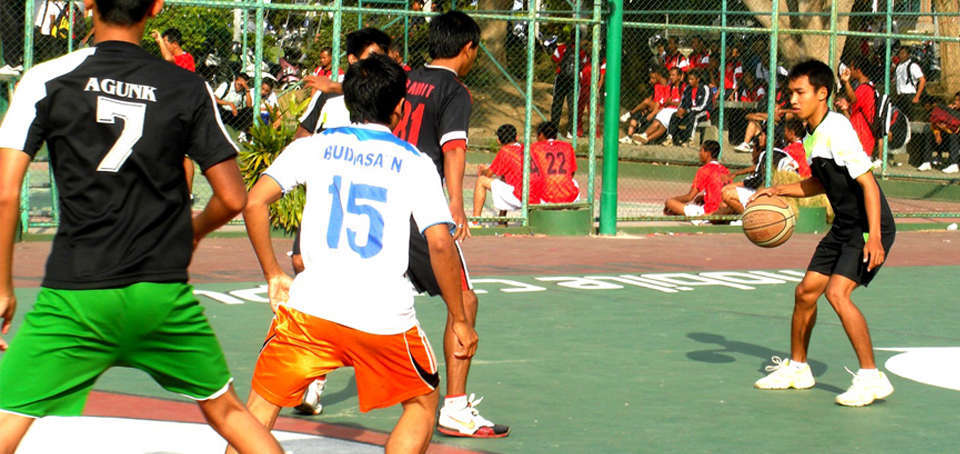

Ekstrakurikuler
-

Basket
Bola basket adalah olahraga bola berkelompok yang terdiri atas dua tim beranggotakan masing-masing lima orang yang saling bertanding mencetak poin dengan memasukkan bola ke dalam keranjang lawan
-
Musik
Ekstrakurikuler musik adalah kegiatan ekstrakurikuler di sekolah yang menawarkan kesempatan bagi siswa untuk belajar dan mengembangkan keterampilan dalam berbagai jenis musik seperti vokal, instrumental, dan musik modern.